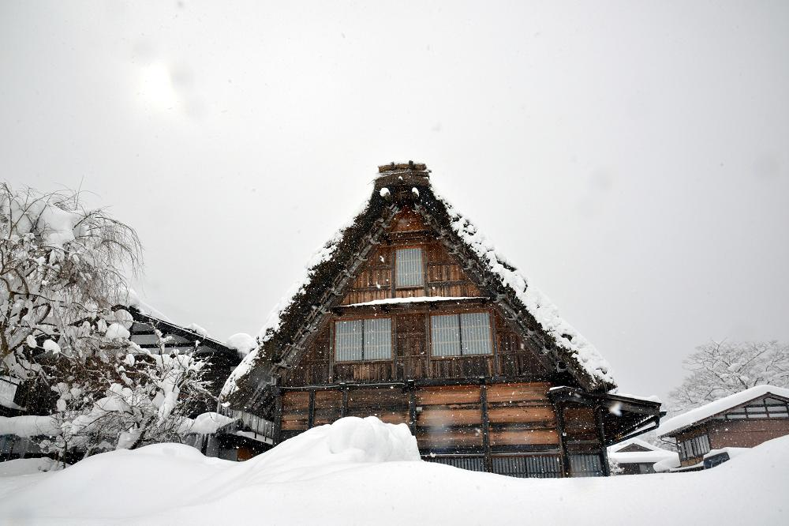
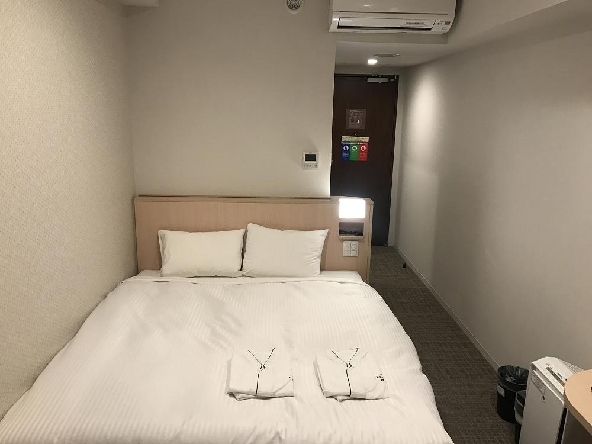

帶爸媽日本自由行-關西金澤行程規劃2018.02
這是屬於爸媽的旅行，規畫上我都會盡量配合爸媽的興趣和想法規劃，把自己的想法收起來，才是帶爸媽旅行的意義。
我的作法是
(1)先初步的訪談(看看對於那些地標有印象度)
(2)提供相關的照片提供參考(產生景點的好感度和興趣度)
(3)將分為景點 餐食 住宿在持續溝通(保持旅遊的熱度)
(4)建立規畫行程並解說行程內容(讓爸媽了解你的用心)
第一天 旅遊地區:大阪 參觀景點:難波(跑跑人) 心齋橋 住宿:大版
第二天 旅遊地區:金澤 參觀景點:COSTCO 住宿:金澤
第三天 旅遊地區:金澤 參觀景點:兼六園 金澤城 北陸小矢部outlet 住宿:金澤

第四天 旅遊地區:富山、合掌村 參觀景點:合掌村 玻璃美術館 住宿:金澤

第五天 旅遊地區:京都 參觀景點:嵐山 金閣寺 住宿:京都

第六天 旅遊地區:姬路 參觀景點:千本鳥居 姬路城 神戶 住宿:京都
第七天 旅遊地區:岡山 參觀景點:岡山後樂園 住宿:京都
第八天 旅遊地區:京都 參觀景點:貴船神社 錦市場 住宿:京都
東橫INN 新大阪站東口
地址：533-0031大阪府大阪市東淀川區西淡路2-8-5
東橫INN 金澤站東口
地址：〒920-0856 石川縣金澤市昭和町13-23
京都八條口相鐵弗雷薩
Sotetsu Fresa Inn Kyoto
官網：http://www.fresainn-hachijo.com/zh-tw
地址：京都府京都市南区東九条西山王町11番
相鐵飯店門口

相鐵房間參考

喜歡這篇文章，想分享於: